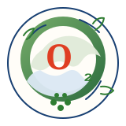

BHOC Therapeutics
Biological hemoglobin oxygen carrier science focused on tissue-level oxygen delivery.


BHOC Veterinary
From domestic pets to endangered wildlife - one breakthrough, countless lives.


One biological need
Different species. The same biological need: oxygen - and the same fundamental mechanism of oxygen delivery at the tissue level.
Biological hemoglobin oxygen carrier science focused on tissue-level oxygen delivery.
Veterinary regulatory history, Oxyglobin evidence and a living scientific repository.
Companion, equine, avian, wildlife, marine and exotic species.
Connecting critical care with species and biodiversity protection.
Hemoglobin adaptation features
BHOC Friends
Rem remains the wire-haired dachshund reference for the BHOC Veterinary visual identity.
Species & Biodiversity Protection Initiative
Across biodiversity, wildlife and endangered species, veterinary care can become part of species protection when critical illness, trauma or anemia threatens individual animals.
IUCN Red List, 2026-1.
Nature kept the core
Heme and chlorophyll share related tetrapyrrole chemistry. Heme coordinates iron (Fe); chlorophyll coordinates magnesium (Mg). Related molecular architecture, different biological roles.

Iron-centered heme chemistry enables reversible oxygen binding in hemoglobin.

Magnesium-centered chlorophyll chemistry supports light capture and photosynthesis.